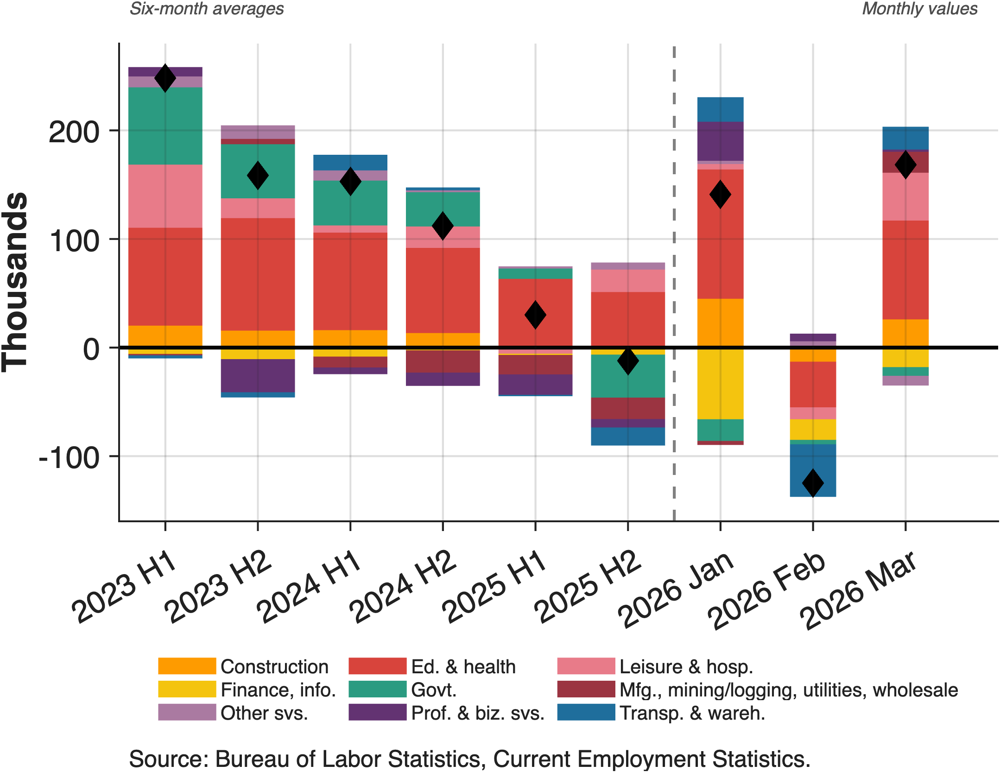

Figure 1

2026's first three months of payroll data come on the heels of concerns that job gains have been driven by a single sector in recent years. While headlines focus on overall numbers, the underlying pattern shows education and health services essentially carrying the entire labor market. Most other major sectors are either contracting or stagnant.
What comes next depends on whether other sectors stabilize and resume hiring, and whether education and health services can continue shouldering the entire burden of job creation. March's data offer some hope: several sectors that contracted in February are back to growth. But until job growth broadens convincingly beyond education and health services, the labor market feels uncomfortably balanced on a narrow base.
From Broad-Based to Narrow
Industry-level employment data from the Bureau of Labor Statistics show how the breadth of job growth has narrowed since the robust gains of 2023. Payroll gains averaged 256,000 per month in the first half of that year, with broad contributions across multiple sectors. By late 2025, that growth had disappeared—the second half saw average net monthly losses of 16,000 jobs as sectors shed workers simultaneously.
Volatility Masks the Trends
Early 2026 shows large swings that cloud our view of underlying trends in sectoral job growth. January's 156,000 gain collapsed to a 125,000 loss in February before rebounding to 168,000 in March. This illustrates the challenge of reading the labor market with each incoming data release.
Yet across these three months, education and health services combined with leisure and hospitality accounted for the vast majority of job creation, continuing the overall pattern of previous years. Finance and information posted consecutive losses, while transportation and warehousing swung from +26,000 in January to -37,000 in February to +21,000 in March. It is too soon to tell what trends are taking hold in 2026.
The Sustainability Question
One question going forward is whether an economy can sustain expansion when job creation concentrates so heavily in one sector while others stagnate. History isn't all that reassuring—broad-based employment growth typically characterizes healthy expansions.